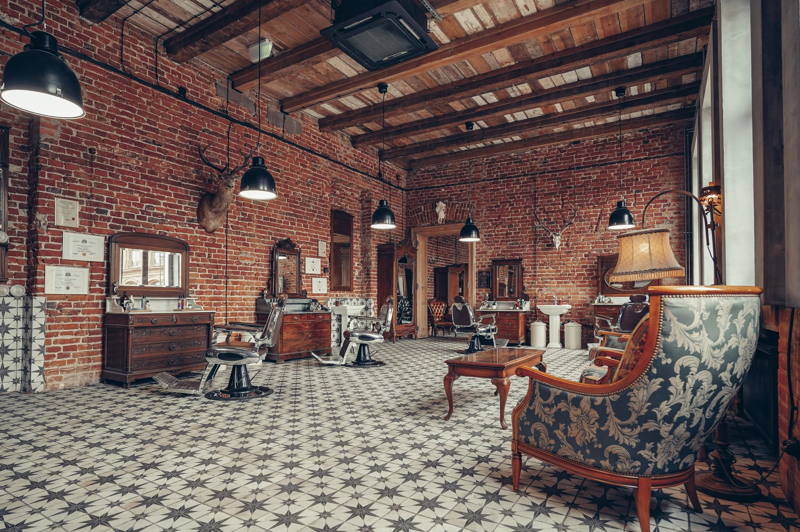

O Grandzie
Rodzinny rodowód, rzemiosło sprzed wieku i droga od jednego salonu w Łodzi do trzech miast.
Stare rzemiosło fryzjerskie nigdy nie było tylko o strzyżeniu. Chodziło o odpowiednio wykonaną usługę i niezwykłą atmosferę. Zakłady ulokowane w starych kamienicach, przepełnione duchem mistrzów ostrza, przyciągały mężczyzn ceniących nienaganną prezencję. Tego ducha chcieliśmy przywrócić.
Współczesny, wciąż pędzący świat nie zostawia wiele miejsca na indywidualizm. W Grandzie znajdziesz czas, bo więzy krwi są fundamentem tej firmy i przekładają się na relacje, które tu budujemy. Nie ma znaczenia, czy przychodzisz pierwszy raz, czy jesteś stałym gościem od lat.
Nasza załoga stara się skracać dystans między klientem a barberem. Rosnące grono stałych gości i wciąż nowe twarze to najlepszy dowód, że łączymy profesjonalną jakość usługi z przyjazną, ludzką aurą. Nasze fotele i pogoda ducha czekają na Ciebie w każdym z trzech miast.

Trzy salony, jedna droga
Zaczęliśmy od jednego adresu. Dziś Granda działa w trzech miastach — każdy salon ma własną ekipę, ale to samo podejście do rzemiosła.
-
Łódź — Barber Shop & Academy
Pierwszy i największy salon Grandy, przy Nawrot 13 w Śródmieściu. To tu, obok strzyżeń, szkolimy kolejnych barberów — stąd „Academy" w nazwie. Największa i najstarsza ekipa, najdłuższa historia opinii.
Zobacz salon w Łodzi → -
Bełchatów
Drugi adres Grandy, przy Rotmistrza Pileckiego 17. Mniejsza ekipa, ten sam rytuał brzytwy i gorącego ręcznika, ocena 5,0 od stałych gości miasta.
Zobacz salon w Bełchatowie → -
Piotrków Trybunalski
Najnowszy salon Grandy, w budynku dworca PKP. Wejście przez poczekalnię, ten sam klimat i podejście, które zbudowaliśmy w pierwszych dwóch miastach.
Zobacz salon w Piotrkowie →
Poznaj nas osobiście
Najlepiej opowie o nas fotel, nie strona internetowa. Wybierz salon najbliżej Ciebie.